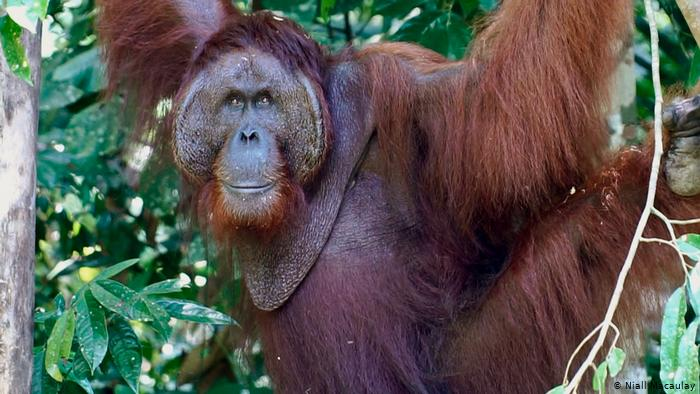
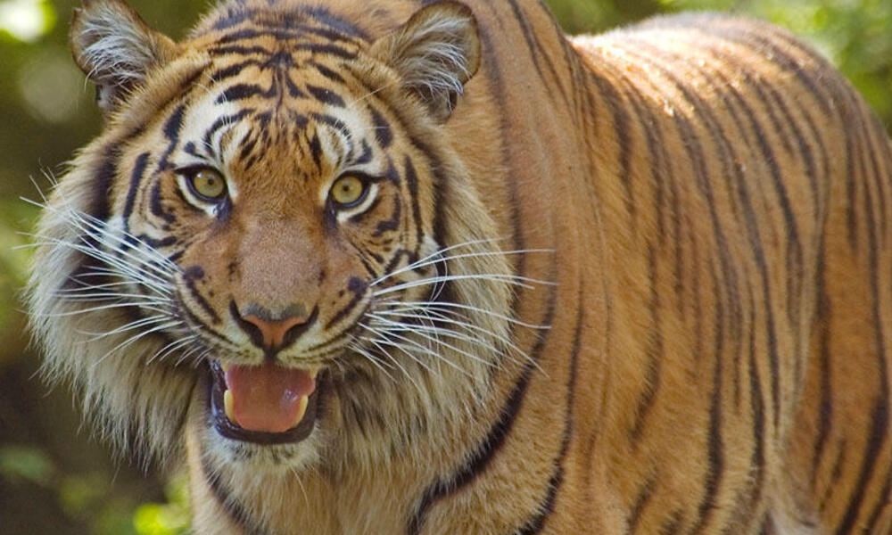
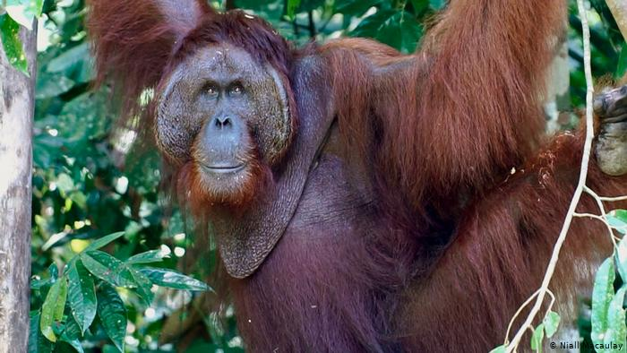
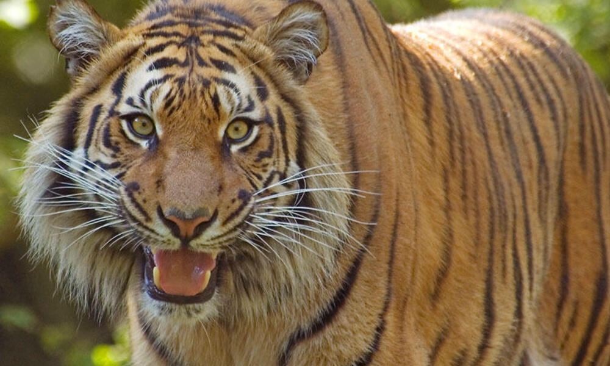
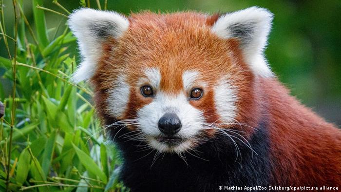
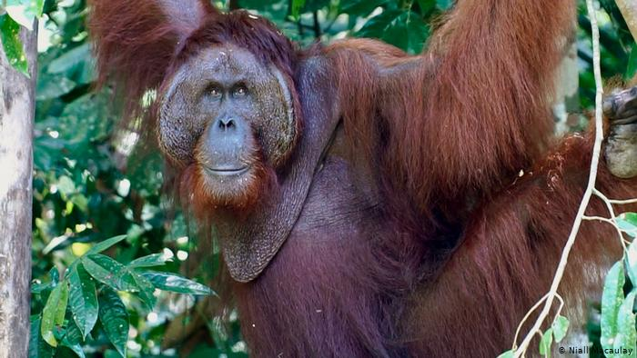
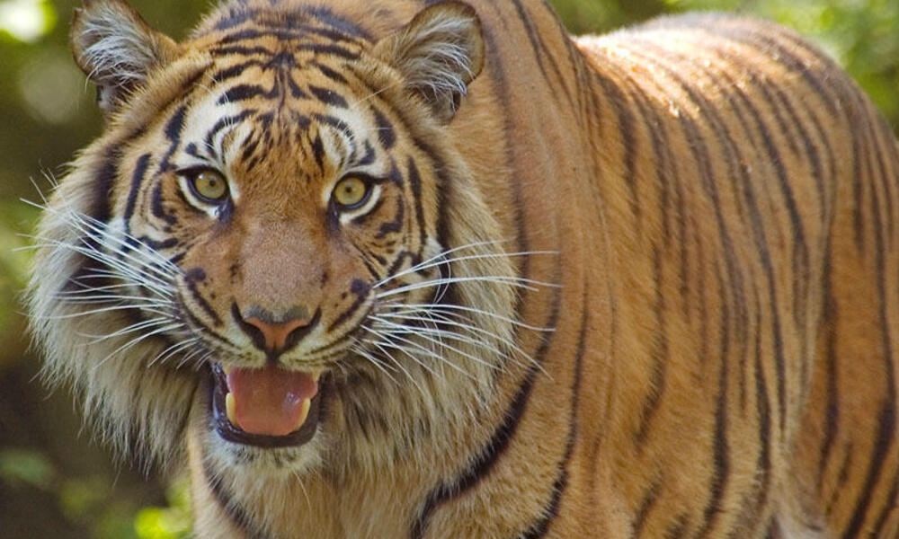
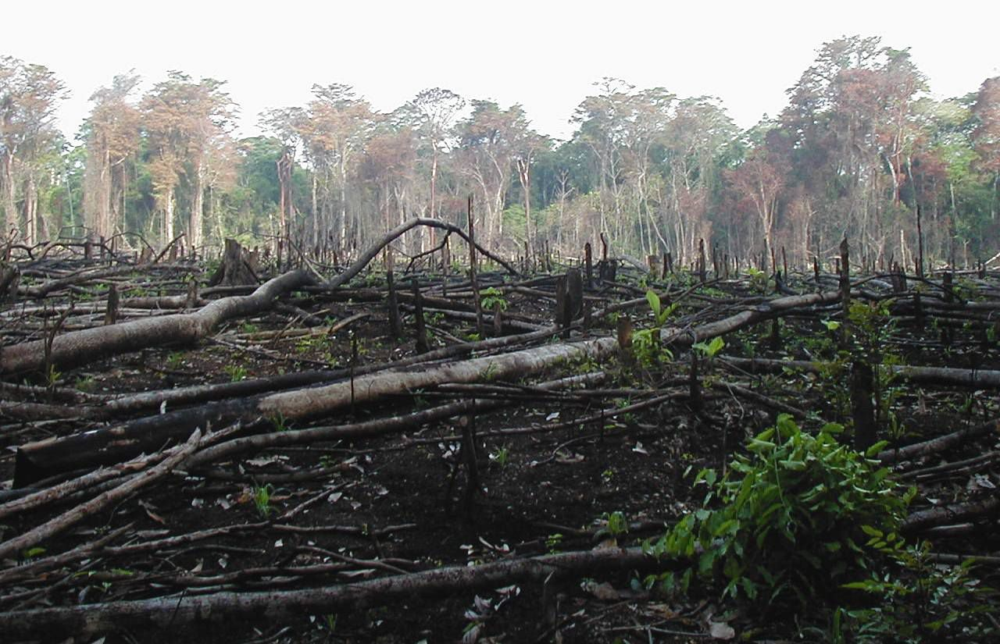

Our goal is easily said, we wish to preserve the life of animals. Everyday, more and more habitats gets destroyed for resources or building. Our plan is to take these animals and give them a safe place to live that will also provide them with everything they need.
The challenges are greater than ever, but with the focus, dedication, and passion of a committed staff—combined with a unique mixture of field, zoo, and aquarium expertise—WACP will continue to set the bar for science, conservation action, and education that has driven our success in protecting wildlife and wild places for over a century. We hold ourselves to the highest standards, adhering to core values of respect, accountability and transparency, innovation, diversity and inclusion, collaboration, and integrity.
WACP scientists study what wildlife species need to thrive. With this knowledge we invest in abating threats to wildlife within their most important strongholds and the corridors that connect them. We target large, iconic, wide-ranging species because of their intrinsic value and because they are vital to ecosystem health. By saving them, we protect all other biodiversity that shelters under their conservation canopy. From penguins to tigers, we are trying our hardest to save endangered species'.


WACPis implementing conservation programs all over the world to mitigate the impacts of CO2 emissions, and help affected people adapt to climate change. We are protecting large swaths of tropical and boreal forest that sequester carbon through our work to protect intact forests and a mechanism called REDD+. We are helping to restore degraded forest lands in areas of high conservation significance and where this can bring benefits to local people. We partner with local communities and governments to find science-based solutions for adapting to the immediate and projected impacts of climate change.
